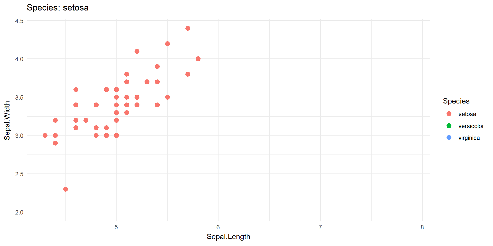

Animating with ggplot2 and gganimate
Introduction
This tutorial introduces the use of ggplot2 and gganimate to create animated data visualisations.
You will learn how to construct animations, apply transitions, and export animations in different formats such as GIF and PNG sequences.
Learning Objectives
By the end of this session you should be able to:
Construct animated graphics using
ggplot2andgganimate.Apply transitions such as
transition_reveal(),transition_states(), andtransition_time().Customise animation appearance with easing, shadows, and enter/exit functions.
Export animations as GIFs, MP4 videos, and PNG frame sequences.
Key Concepts in gganimate
To effectively use gganimate, it’s important to understand the conceptual building blocks that make animation possible within the grammar of graphics framework.
These concepts parallel how ggplot builds static images but extend them into the temporal dimension.
1. Frames and the Animation Timeline
An animation is a sequence of frames—individual static images—that, when played in order, create the illusion of movement.
In gganimate:
Each frame corresponds to a point in time, a state, or a position along a transition.
You control how frames evolve using transition functions.
Rendering functions (like
gifski_renderer()orfile_renderer()) compile frames into a final animation.
Unlike video-editing tools, you do not manually create frames—gganimate computes the intermediate frames using interpolation.
2. Transitions
Transitions describe how data changes from frame to frame. They are the core of gganimate.
Key transition types:
transition_reveal(): Ideal for line plots; reveals data in order of a continuous variable.transition_time(): Treats time as continuous; interpolates values smoothly between timestamps.transition_states(): Jumps between discrete categories (e.g., Species or Year).transition_manual(): Lets you control animation progression manually using any variable.
Transitions determine what part of the data is visible at each point in the animation.
3. Views and Shadows
These functions modify how previous frames persist.
shadow_mark(): Leaves previous points visible at lower opacity.shadow_trail(): Creates a fading trail behind moving objects.shadow_wake(): Produces dynamic ghosting effects.
They give context by illustrating path history or past states.
4. Easing
Easing determines how quickly values change from one frame to the next, affecting the sense of motion.
Examples:
"linear": Constant speed."quad-in-out": Slow–fast–slow movement."bounce-out": Creates a bouncing effect."elastic-in": Overshoots then settles.
These mimic physical motion and create smoother, more natural animations.
5. Enter and Exit Behaviours
These control how elements appear and disappear in an animation.
Common options:
enter_fade()— elements gradually fade in.enter_grow()— elements expand into view.exit_shrink()— elements contract as they leave.exit_fade()— elements fade out.
Together, these help direct the viewer’s attention.
6. Dynamic Labels and Frame Variables
You can embed metadata directly into titles and captions using special tokens:
{frame_time}— current time (from transition_time){closest_state}— current categorical state{frame}— frame number{nframes}— total frames
These variables dramatically improve interpretability and storytelling.
Installing Libraries
The Grammar of Animation
gganimate extends ggplot2 by adding:
- Transitions: How data evolves (e.g.,
transition_reveal(),transition_states(),transition_time()). - Views / Shadows: How previous states appear (e.g.,
shadow_mark()). - Easing: Smoothness of movement (e.g.,
ease_aes("linear")).
All usual ggplot elements still apply — layers, themes, labels, scales.
Example 1 — Line Reveal Animation
Why transition_reveal()?
transition_reveal() is designed for plots where the data should appear gradually along a continuous variable, usually time or sequence order.
It works by:
Ordering the data along the specified variable.
Interpolating intermediate values between observed points.
Revealing the line or path progressively, frame by frame.
In other words, as time advances in the animation, the geometry is literally drawn onto the canvas
This makes transitions ideal for cumulative processes, growth curves, trajectories, climate time series, or any phenomenon that naturally unfolds.
How It Computes Frames
Each frame represents a fractional value between real data points.
For a line, gganimate computes intermediate coordinates and draws part of the line corresponding to the frame’s position.
No extrapolation occurs—the animation strictly follows the data.
Static Plot
Animating the Line
Saving Animations — Concepts Before Code
Before saving an animation, it is important students understand renderers. A renderer determines:
the file format,
the number of frames,
the compression method,
and the level of quality.
How Rendering Works
gganimate builds a list of all frames internally.
Each frame is drawn as a normal ggplot object.
The renderer receives these frames and assembles them.
Output is written to disk only at the end of the process.
Why Different Renderers?
gifski_renderer()creates animated GIFs, good for browsers and slides.av_renderer()outputs MP4 videos, good for higher-quality results.file_renderer()exports frames as single PNG files, essential for:computer vision workflows,
Quarto PDF embedding,
post-processing via external tools.
Save as GIF
Save as PNG Frame Sequence
Example 2 — Animated Scatter Plot (Gapminder)
Why transition_time()?
transition_time() is suitable for continuous time variables where values should move smoothly between observed states.
Unlike transition_states(), which jumps between categories, transition_time() treats time as a fluid dimension.
This is particularly useful when demonstrating:
demographic trends,
climate indicators over years,
crop growth over growing seasons,
financial indicators over long periods.
How the Interpolation Works
For every variable mapped to aesthetics (x, y, size, colour):
gganimate computes intermediate values between time ( t ) and ( t+1 ).
Movements appear smooth because values change gradually.
The number of frames determines how smooth the motion is.
Example Code
library(gapminder)
p2 <- ggplot(gapminder, aes(gdpPercap, lifeExp, size = pop, colour = continent)) +
geom_point(alpha = 0.7) +
scale_x_log10() +
theme_minimal() +
labs(title = 'Year: {frame_time}',
x = "GDP per Capita", y = "Life Expectancy")
anim2 <- p2 + transition_time(year) + ease_aes('linear')
anim2Saving
Example 3 — State Transitions with Shadows
Why transition_states()?
transition_states() is ideal when the variable of interest represents distinct, non-interpolated conditions such as:
species,
treatments,
seasons,
growth stages,
machine states.
Unlike transition_time(), which interpolates smoothly, transition_states() holds each state for a specified duration before jumping to the next one.
Understanding state_length and transition_length
state_lengthcontrols how long each category stays on screen.transition_lengthcontrols the smoothness and duration of transitions between categories.
This is conceptually similar to video editing, where clips have durations and transitions have lengths.
Shadows — Why They Matter
Shadows provide context by showing what came before.
shadow_mark()retains previous elements at reduced opacity.
Example Code
Rendering
Easing Explained & Examples
Easing functions determine how motion feels. Here are some examples visualised one after the other—each plot appears below, showcasing the animation style.
Example: Comparing Easing Functions
library(ggplot2)
library(gganimate)
df <- data.frame(
x = c(1, 2, 3, 4, 5),
y = c(4, 2, 5, 3, 6)
)
base <- ggplot(df, aes(x, y)) +
geom_point(size = 5, colour = "navy") +
theme_minimal() +
xlim(1, 5) + ylim(1, 6) # ensures consistent axes
anim_linear <- base +
transition_reveal(x) +
ease_aes('linear') +
labs(title = "Easing: Linear (constant speed)")
anim_quad <- base +
transition_reveal(x) +
ease_aes('quadratic-in-out') +
labs(title = "Easing: Quad-in-out (slow start/end)")
anim_elastic <- base +
transition_reveal(x) +
ease_aes('elastic-in') +
labs(title = "Easing: Elastic-in (bouncy start)")
# Show each animation object; Quarto/gganimate will handle rendering
anim_linear
anim_quad
anim_elasticEnter/Exit Behaviours — Examples
Enter and exit functions help smooth how elements appear/disappear.
Example: Enter and Exit Functions in Action
# Data to show two groups fading/shrinking at different times
df2 <- data.frame(
x = rep(1:5, 2),
y = c(2,4,6,4,2, 7,5,8,6,4),
grp = rep(c("A", "B"), each = 5),
time = rep(1:5, 2)
)
p <- ggplot(df2, aes(x, y, colour = grp)) +
geom_point(size = 5) +
theme_minimal() +
xlim(1, 5) + ylim(1, 10)
anim_enter_exit <- p +
transition_states(grp, transition_length = 2, state_length = 2) +
enter_fade() +
exit_shrink() +
labs(title = "Group: {closest_state}")
# Let Quarto/gganimate render the animation
anim_enter_exitUsing these techniques makes animations more digestible and greatly improves storytelling.
Shadows — Temporal Structure
Shadows act like visual memory. They help viewers:
understand past states,
perceive motion paths,
interpret cluster evolution.
Static Plot
p <- ggplot(economics, aes(x = date, y = unemploy)) +
geom_line(colour = "steelblue", linewidth = 1) +
labs(title = "Unemployment Over Time",
x = "Year", y = "Unemployment (thousands)") +
theme_minimal()Animating the Line

Saving Animations
Save as GIF
Save as PNG Frame Sequence
Save as MP4 Video
Example 2 — Animated Scatter Plot (Gapminder)
library(gapminder)
p2 <- ggplot(gapminder, aes(gdpPercap, lifeExp, size = pop, colour = continent)) +
geom_point(alpha = 0.7) +
scale_x_log10() +
theme_minimal() +
labs(title = 'Year: {frame_time}',
x = "GDP per Capita", y = "Life Expectancy")
anim2 <- p2 + transition_time(year) + ease_aes('linear')Example 3 — State Transitions with Shadows
Customising Animations
Easing
Enter/Exit Effects
Shadows
Mini Exercise
Animate ozone levels in the airquality dataset.
Hints:
- Use
ggplot(airquality, aes(Day, Ozone, group = Month)). - Try
transition_states(Month)ortransition_reveal(Day).
Summary
Use animation to reveal dynamics not visible in static plots.
gganimateintegrates smoothly with the ggplot grammar.Save animations in multiple formats depending on the workflow.
Keep animations purposeful and clear.